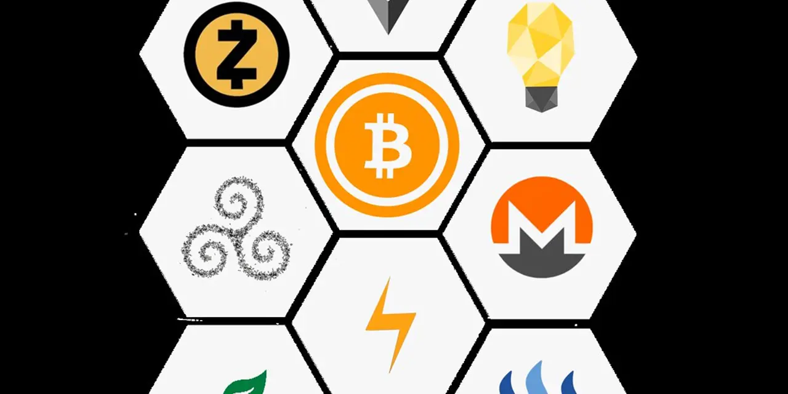

비트코인과 이더리움 중 어느 쪽 전망이 더 밝은지 묻는다면, 먼저 질문을 둘로 나눠야 합니다. 1년 안에 더 단순하고 방어적인 자산을 고르는 문제라면 비트코인이 앞섭니다. 이미 현물 ETF와 기업 재무전략, 희소성 내러티브가 제도권 언어로 번역됐기 때문입니다. 하지만 3~5년 뒤 자산토큰화, 스테이블코인, 온체인 결제, 수탁, 스테이킹이 실제 산업 수익으로 커지는 문제라면 이더리움 쪽 전망이 더 넓어질 수 있습니다.
핵심은 RWA입니다. RWA는 부동산, 국채, 머니마켓펀드, 채권, 매출채권 같은 실물자산을 블록체인 위의 토큰 형태로 표현하는 흐름입니다. 말은 화려하지만 투자자가 봐야 할 질문은 단순합니다. 이 시장이 커질 때 수수료와 보관 수익, 거래 수익, 스테이킹 수요가 어디에 남느냐입니다. 그 답이 공용 스마트계약망과 이더리움 계열 인프라에 남으면 이더리움은 비트코인보다 밝은 성장 옵션이 됩니다. 반대로 RWA가 은행 내부망, 사설체인, 제한된 기관 전용 장부에 머물면 비트코인의 단순한 신뢰 자산 프레임이 더 강하게 남을 수 있습니다.
그래서 이 글의 결론은 조건부입니다. 비트코인은 이미 “디지털 준비자산”이라는 설명이 강하고, 이더리움은 “토큰화 금융 인프라”라는 설명을 아직 숫자로 더 증명해야 합니다. 안정성과 설명력은 비트코인, 성장 폭과 산업 연결성은 이더리움입니다. RWA가 실제로 커질수록 둘의 승부는 가격 차트보다 정산 위치, 수수료 위치, 규제 허용 범위에서 갈립니다.
RWA가 커질수록 질문은 가격보다 정산 위치입니다

RWA 자산토큰화가 중요한 이유는 암호화폐 시장이 더 이상 코인끼리만 사고파는 구조에 머물지 않을 수 있기 때문입니다. 국채형 토큰, 토큰화 머니마켓펀드, 스테이블코인 결제, 기관 수탁이 커지면 블록체인은 가격 투기 도구가 아니라 금융 장부의 일부가 됩니다. 블랙록이 BUIDL 토큰화 펀드를 출시한 사례는 이 흐름이 단순 코인 커뮤니티 밖으로 나갔다는 신호입니다.
다만 RWA가 커진다고 모든 코인 가격이 같이 오르는 것은 아닙니다. 토큰화 국채가 늘어도 그것이 이더리움 메인넷, 레이어2, 수탁사, 거래소, 스테이블코인 발행사 중 어디에 수익을 남기는지에 따라 수혜가 달라집니다. RWA.xyz의 토큰화 국채 현황처럼 시장을 추적할 때도 총액보다 발행 체인, 발행사, 수탁 구조, 거래 가능성, 실제 유통량을 함께 봐야 합니다.
이 대목에서 이더리움은 비트코인보다 직접적인 연결 고리가 많습니다. 스마트계약, 스테이블코인, 토큰화 펀드, 디파이 담보, 레이어2 정산이 모두 이더리움 생태계의 언어로 설명되기 쉽습니다. 반면 비트코인은 RWA의 실행 플랫폼이라기보다 그 시장이 커지는 과정에서 “가장 단순한 디지털 담보 자산”으로 재평가될 가능성이 큽니다. 둘 다 수혜를 받을 수 있지만, 수혜의 종류가 다릅니다.
투자자가 놓치기 쉬운 지점은 여기에 있습니다. RWA는 이더리움에 더 직접적인 산업 기회를 주지만, 그 기회가 반드시 ETH 가격으로 바로 이어지는 것은 아닙니다. 토큰이 이더리움 계열에서 발행되더라도 수수료가 낮고, 발행사가 자체적으로 대부분의 경제적 가치를 가져가고, 사용자가 장기 보유만 한다면 ETH의 가격 탄력은 제한될 수 있습니다. 이더리움 전망이 밝아지려면 “토큰화가 됐다”보다 “토큰화가 반복 거래, 담보 활용, 수수료, 스테이킹 수요로 이어졌다”가 필요합니다.
비트코인은 RWA를 직접 먹기보다 신뢰 자산으로 남습니다
관련 영상
자산 토큰화의 원년, 블록체인 기반 이더리움 생태계가 온다
비트코인의 장점은 복잡한 기능이 아니라 기능을 줄인 데서 나옵니다. 공급량은 제한되어 있고, 네트워크의 목적은 단순하며, 투자자가 설명해야 할 변수가 상대적으로 적습니다. 그래서 기관 투자자에게 비트코인은 “토큰화 금융의 운영 체제”보다 “디지털 희소 자산”에 가깝게 받아들여집니다. 이 단순함은 강점입니다. ETF 자금, 국가·기업 준비자산 논의, 장기 보유자 수요가 붙을 때 비트코인은 이더리움보다 설명 비용이 낮습니다.
MSTR 같은 스트래티지는 이 차이를 잘 보여주는 관련종목입니다. 회사는 2026년 5월 말 기준 843,706 BTC를 보유하고 평균 매입가를 BTC당 75,699달러로 공시했습니다. 동시에 보통주와 여러 우선주를 활용해 자본조달 구조를 계속 굴립니다. 그래서 MSTR은 비트코인 자체보다 더 강한 레버리지를 기대하는 투자자에게 쓰이지만, 총 BTC 보유량만 보면 안 됩니다. 주당 BTC, 우선주 배당, 추가 발행, 일부 BTC 매도 여부가 함께 움직입니다.
비트코인의 밝은 전망은 RWA가 직접 비트코인 위에서 돌아간다는 뜻이 아닙니다. 오히려 RWA와 스테이블코인이 커질수록 기관은 디지털자산을 더 익숙하게 다루게 되고, 그 과정에서 가장 단순한 준비자산으로 비트코인을 다시 볼 수 있습니다. 금이 결제망은 아니지만 금융 시스템 안에서 담보와 준비자산의 언어를 갖는 것과 비슷합니다.
다만 비트코인의 약점도 그 단순함에서 나옵니다. RWA 시장이 폭발적으로 커져도 비트코인이 거래 수수료, 수탁 수익, 스마트계약 실행 수요를 직접 가져오지는 못할 수 있습니다. 가격 상승 논리는 강하지만 산업 매출 연결은 간접적입니다. 그래서 단기 방어력은 비트코인, 산업 확장 수혜는 이더리움이라는 구분이 필요합니다.
이더리움은 RWA가 수수료와 스테이킹으로 남을 때 강해집니다
이더리움의 밝은 전망은 “모든 자산이 이더리움으로 온다”는 문장 하나로 끝나지 않습니다. 실제로 봐야 할 것은 자산토큰화가 ETH 경제에 어떤 흔적을 남기는지입니다. 토큰화 펀드가 발행되고, 스테이블코인이 결제에 쓰이고, 기관이 온체인 담보를 활용하고, 그 거래가 이더리움 계열의 데이터 게시 비용, 수탁 수익, 거래 수수료, 스테이킹 수요로 이어지면 이더리움은 비트코인과 다른 방식으로 평가받습니다.
이더리움 공식 스테이블코인 설명처럼, 이더리움 생태계는 오래전부터 달러 표시 토큰과 금융 애플리케이션이 만나는 공간이었습니다. RWA가 커지면 스테이블코인은 결제 통화가 되고, 토큰화 국채는 담보가 되며, 거래소와 수탁사는 제도권 고객의 진입로가 됩니다. 이 구조는 COIN 같은 코인베이스에도 중요합니다. COIN은 단순 거래소가 아니라 수탁, USDC 생태계, Base 사용량, 기관 연결성으로 RWA 흐름을 받아낼 수 있는 인프라 기업이기 때문입니다.
BMNR 같은 비트마인도 이더리움 전망의 보조 관련종목으로 볼 수 있습니다. BMNR은 이더리움 보유와 스테이킹 전략을 내세우는 주식형 ETH 노출 통로입니다. 다만 이 종목도 총 ETH 보유량보다 주당 순자산가치, 스테이킹 보상, 희석, 자금조달 조건을 먼저 확인해야 합니다. RWA가 이더리움 수요를 키우더라도, 관련종목의 주주 몫은 각 회사의 발행 조건과 비용 구조에 따라 달라집니다.
이더리움이 비트코인보다 더 밝아지는 조건은 분명합니다. RWA 발행이 늘고, 그 발행이 이더리움 계열에서 반복 사용되고, 스테이킹 수요가 유지되고, ETH/BTC 상대강도가 회복되어야 합니다. 여기에 현물 ETF 순유입과 규제 명확성이 붙으면 이더리움은 “좋은 기술”이 아니라 “수익을 만드는 금융 인프라”로 읽힐 수 있습니다. 이 구간이 오면 장기 성장률은 비트코인보다 이더리움이 더 커질 수 있습니다.
하지만 RWA가 사설 장부에 머물면 이더리움의 수혜는 줄어듭니다
이더리움에 가장 큰 위험은 RWA가 기대만큼 공용망에 남지 않는 것입니다. 대형 금융기관은 보안, 규제, 고객정보, 내부통제 때문에 모든 거래를 공개 블록체인에서 처리하지 않을 수 있습니다. 토큰화 자산이 사설망이나 허가형 체인에서만 움직이고, 최종 정산도 내부 장부에 가까운 방식으로 처리되면 ETH가 가져갈 수수료와 스테이킹 수요는 줄어듭니다.
또 하나의 위험은 비용 구조입니다. 이더리움이 너무 비싸면 사용자는 레이어2나 다른 체인으로 이동합니다. 반대로 너무 싸면 ETH 보유자가 기대하는 수수료와 소각 압력은 약해질 수 있습니다. 이 균형이 어렵습니다. 사용자가 많아지는 것과 ETH 가격이 오르는 것이 항상 같은 방향으로 움직이지 않는 이유입니다.
규제도 양면적입니다. 명확한 법은 기관 진입을 돕지만, 스테이킹과 디파이, 수익형 토큰, 거래소 상장 기준에 까다로운 조건을 붙일 수 있습니다. COIN과 HOOD 같은 플랫폼은 규제 명확성의 수혜를 받을 수 있지만, 동시에 비용과 상품 제한도 감당해야 합니다. RWA가 커져도 규제가 어느 회사에 어떤 비용을 남기는지 확인하지 않으면 관련종목을 잘못 읽을 수 있습니다.
비트코인에도 위험은 있습니다. ETF 자금이 둔해지고, MSTR 같은 재무전략 기업의 프리미엄이 줄고, 고금리 환경에서 위험자산 선호가 꺾이면 비트코인의 단순한 논리도 흔들립니다. 하지만 비트코인은 최소한 “RWA가 어디서 정산되느냐”라는 복잡한 질문에 덜 노출됩니다. 이 점이 방어적인 장점입니다.
그래서 더 밝은 쪽은 시간표에 따라 달라집니다
1년 전망만 보면 비트코인이 더 밝다고 말할 근거가 있습니다. ETF 접근성, 희소성, 제도권 설명력, 준비자산 내러티브가 이미 자리 잡았습니다. 시장이 불안할 때도 투자자는 “복잡한 암호화폐 생태계”보다 “가장 큰 디지털 자산”을 먼저 찾을 가능성이 큽니다. 이 구간에서는 BTC 가격, ETF 순유입, MSTR의 주당 BTC와 자본조달 조건이 핵심 확인표입니다.
반면 3~5년 전망에서는 이더리움의 옵션이 더 큽니다. RWA, 스테이블코인, 온체인 결제, 수탁, 스테이킹, 레이어2가 실제 금융 사용량으로 이어지면 이더리움은 단순 보유 자산을 넘어 산업 인프라로 평가받을 수 있습니다. 이때 봐야 할 것은 ETH 가격 자체보다 토큰화 자산 총액, 이더리움 계열 발행 비중, 네트워크 수수료, 스테이킹 참여율, ETH/BTC 상대강도입니다.
정리하면 비트코인은 이미 밝은 쪽이고, 이더리움은 더 밝아질 수 있는 조건을 증명해야 하는 쪽입니다. RWA가 공용 스마트계약망으로 들어와 반복 수수료와 스테이킹 수요를 만들면 이더리움의 장기 전망이 더 넓어집니다. RWA가 사설 장부와 기관 내부망에 머물고, 암호화폐 시장의 제도권 수요가 ETF와 준비자산 중심으로만 흘러가면 비트코인이 더 안정적인 승자가 됩니다.
투자자는 둘 중 하나를 감정적으로 고를 필요가 없습니다. 비트코인은 단순한 신뢰 자산으로, 이더리움은 RWA와 스테이블코인 금융 인프라로 봐야 합니다. 그리고 관련종목은 그 역할에 맞춰 나눠야 합니다. COIN은 거래·수탁·스테이블코인 인프라, MSTR은 비트코인 재무전략, BMNR은 ETH 트레저리와 스테이킹, HOOD는 개인 투자자 접근성과 거래 활성도를 확인하는 보조 지표입니다. 어느 쪽 전망이 더 밝은지는 결국 가격 목표가 아니라 이 네 가지 통로 중 어디에 실제 돈이 남느냐로 판가름납니다.